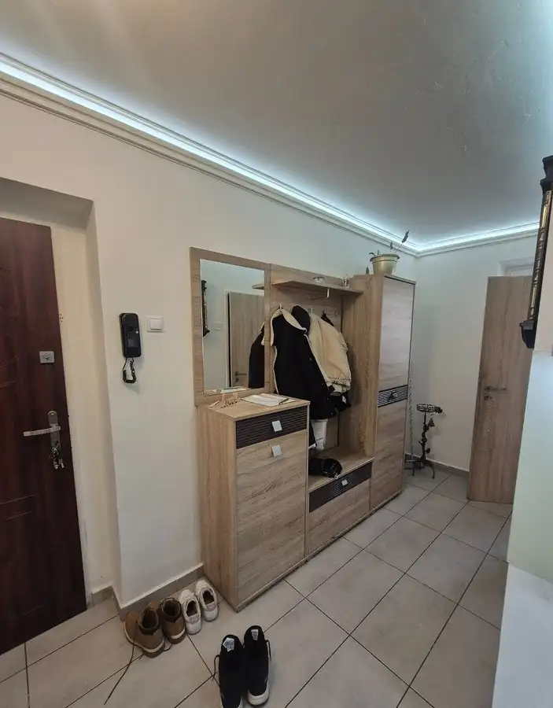
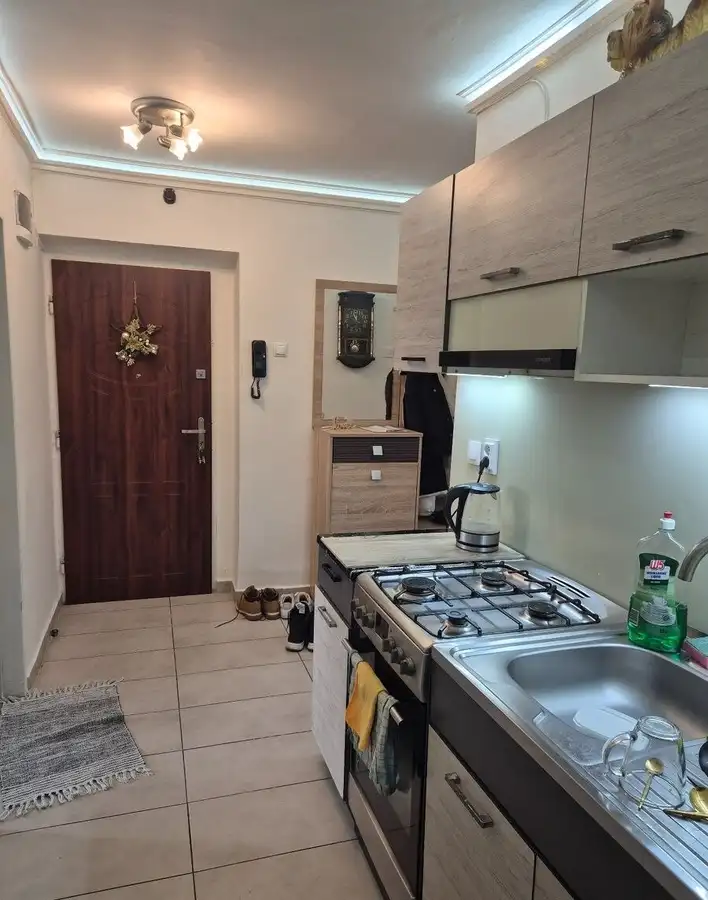
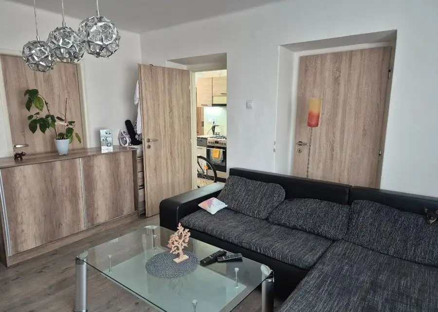
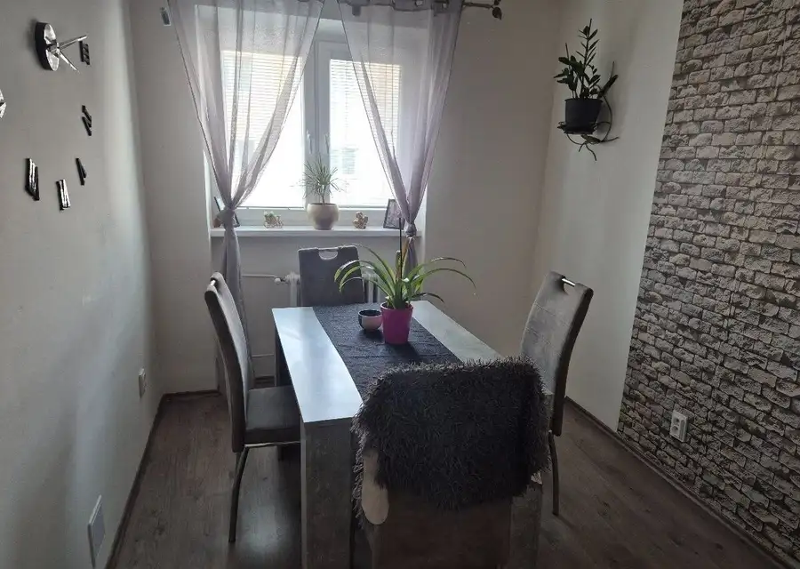
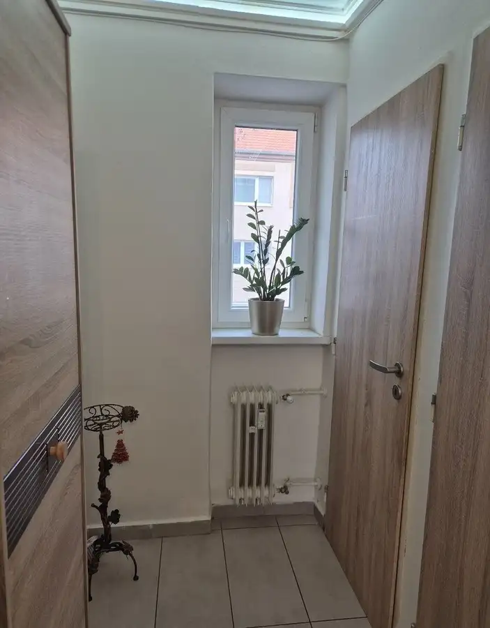
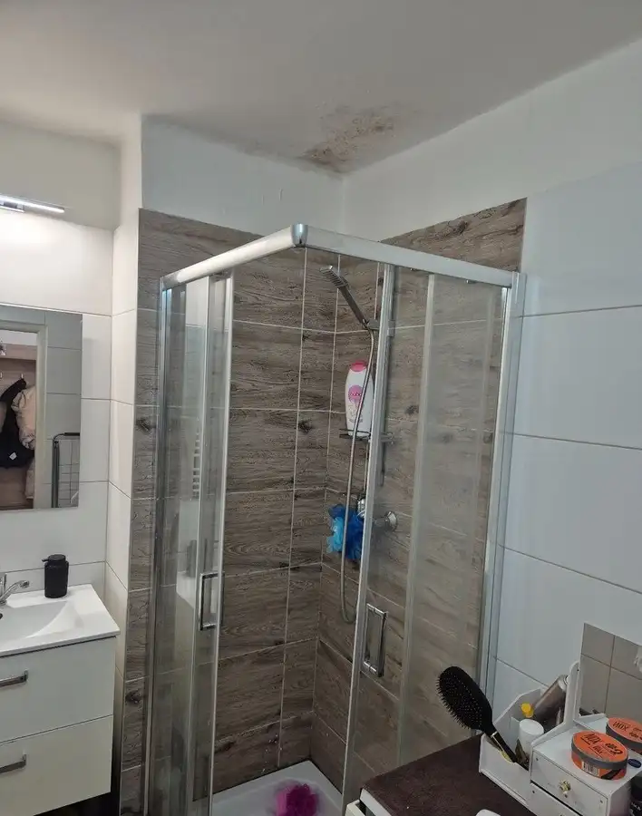

Chytro vyriešený priestor s okamžitým výnosom: Moderný 3-izbový tehlový byt (Komárno, Sústružnícka ul.)
Komárno








- Dispozícia3-izbový
- Plocha58 m²
- Poschodie1. z 7
- StavKompletná rekonštrukcia
- VlastníctvoOsobné
O nehnuteľnosti
Hľadáte investíciu, kde odpadá akákoľvek práca s rekonštrukciou či hľadaním nájomcov? Alebo hľadáte kompaktné trojizbové bývanie, kde bol využitý každý štvorcový meter na maximum?Realitná kancelária Hausia uvádza na trh kompletne a moderne zrekonštruovaný byt na Sústružníckej ulici v Komárne. Byt s celkovou výmerou 58 m² prešiel premyslenou prestavbou z pôvodne 2-izbovej dispozície na plnohodnotné 3-izbové bývanie.Nehnuteľnosť sa predáva kompletne zariadená a je v nej usadená dlhodobá, overená nájomná rodina/nájomníci. Kúpou tak okamžite získavate stabilný pasívny príjem bez výpadku nájomného.Kľúčové vlastnosti a technické prednosti:Chytrá dispozícia (58 m²): Absencia balkóna umožnila presunúť obytnú plochu do interiéru a vytvoriť plnohodnotnú tretiu samostatnú miestnosť.Poctivá tehlová stavba: Tehla zaručuje výborné tepelno-izolačné vlastnosti, ticho a zdravú vnútornú klímu.Vyhľadávané 1. poschodie: Ideálne podlažie pre pohodlné bývanie bez nutnosti zdolávať veľa schodov.Kompletná rekonštrukcia: Moderná kuchynská linka na mieru, nová sanita, kompletne vymenené rozvody, podlahy a hladké stierky.Nezávislý ohrev vody: Vlastný elektrický bojler pre presnú kontrolu nad spotrebou a nákladmi na TÚV.Odkladací priestor: K bytu patrí samostatná pivnica v suteréne. Výhody lokality (Sústružnícka ulica):Ticho a pokoj: Ulica situovaná mimo rušných mestských tepien.Kompletné služby v pešej dostupnosti: Obchody, potraviny, školy aj zastávky MHD sú doslova za rohom.Pohodlné parkovanie: Dobré možnosti zaparkovať vozidlo priamo pred bytovým domom.Prečo kúpiť túto nehnuteľnosť cez Hausia?V Hausia sa postaráme o to, aby prechod vlastnáctva aj nájomného vzťahu prebehol úplne hladko:Kompletný právny servis: Všetky zmluvy sú autorizované právnikom pre vašu 100% istotu.Právny prevod nájmu: Pripravíme všetku potrebnú dokumentáciu k prevodu nájomného vzťahu.Kataster bez poplatkov: Základný správny poplatok (kolok) pri prepise hradíme za vás.Prevedenie služieb: Postaráme sa o kompletný popredajný prepis energií u dodávateľov.Cena: 87 900 €(Cena je konečná, vrátane provízie a kompletného servisu RK Hausia.)Investujte do hotového produktu s garanciou výnosu.Kontaktujte ma ešte dnes pre bližšie informácie: Hulala Jaroslav 0949 687 832 jaroslav.hulala@hausia.sk www.hausia.sk
Parametre
- Cena vrátane energií
- Nie
- Druh
- 3 izbový byt
- Dátum zverejnenia
- 15. 09. 2026
- Energetický certifikát budovy
- nie je
- Podlažie
- 1
- Počet nadzemných podlaží
- 7
- Stav nehnuteľnosti
- Kompletná rekonštrukcia
- Typ
- Predaj
- Typ konštrukcie
- Panelová
- Vlastníctvo
- Osobné
- Úžitková plocha
- 58 m²
Kde to je


Mohlo by Vás zaujímať
 BytNové
102 000 €Moderné bývanie bez investícií: Kompletne zrekonštruovaný 1-izbový byt (Nové Zámky, Novomestská ul.)
Nové Zámky
1-izbový38 m²3. podlažie
BytNové
102 000 €Moderné bývanie bez investícií: Kompletne zrekonštruovaný 1-izbový byt (Nové Zámky, Novomestská ul.)
Nové Zámky
1-izbový38 m²3. podlažie
 DomNové
164 900 €Kompletne obnovený dom s bazénom a terasou: 4-izbový rodinný dom (Zemné, Ľaliová ul.)
Zemné
250 m²
DomNové
164 900 €Kompletne obnovený dom s bazénom a terasou: 4-izbový rodinný dom (Zemné, Ľaliová ul.)
Zemné
250 m²
 BytNové
77 000 €Poctivý tehlový základ pre váš vysnívaný domov: 2-izbový byt na 1. poschodí (Komárno, Budovateľská ul.)
Komárno
2-izbový58 m²1. podlažie
BytNové
77 000 €Poctivý tehlový základ pre váš vysnívaný domov: 2-izbový byt na 1. poschodí (Komárno, Budovateľská ul.)
Komárno
2-izbový58 m²1. podlažie